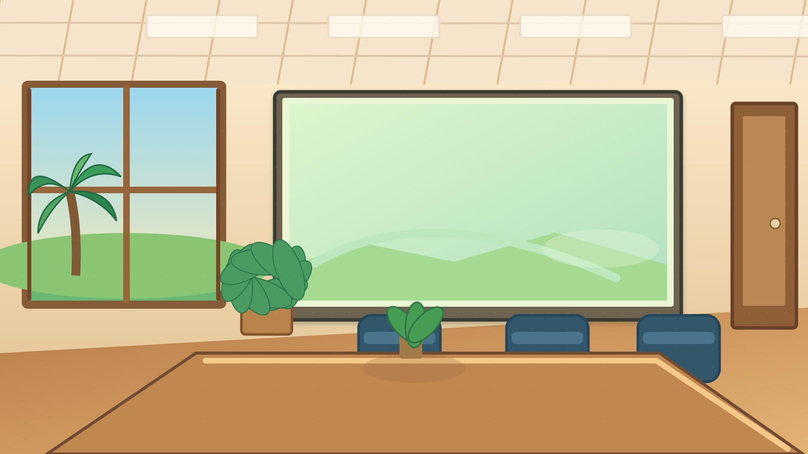

🎬 CHƯƠNG 1 — TỪ HỢP TÁC ĐẾN TAN VỠ

TUẦN 1
📖 CÂU CHUYỆN VÙNG CỒN XANH
🧭 Nhiệm vụ của Minh An
Không tìm một người để đổ lỗi. Hãy tìm hiểu lợi ích và khó khăn của cả ba phía trước khi đề xuất cách nối lại hợp tác.
v8.0: người chơi điều phối các bên, thử chính sách và quan sát hậu quả của từng quyết định.